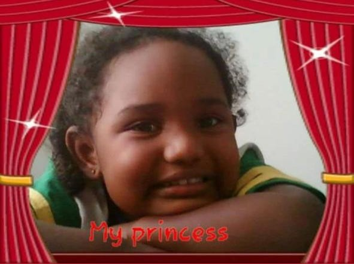
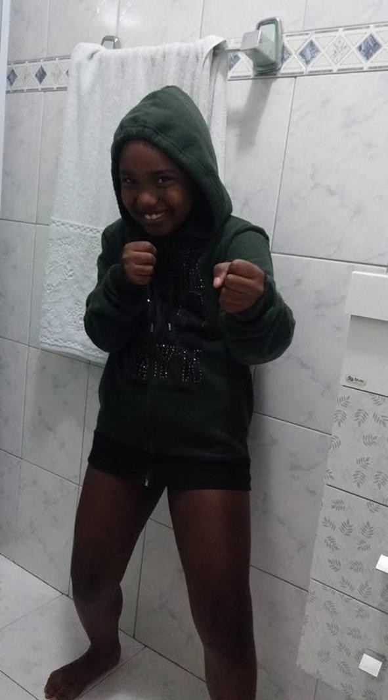

No dia 3 de dezembro de 2006, nasceu aquela que, de tão especial, fez o próprio ar se fazer presente, adentrando suas narinas apenas para agradecê-la por existir nesta vida, a sua única e valiosa vida. Carioca da gema, construiu sua história na Baixada Fluminense, mais precisamente em Nova Iguaçu.
Foi em um condomínio perto da Via Dutra que ela encontrou, pela primeira vez, o seu lar. Tão graciosa era a sua presença que os prédios se curvavam para o Sol não a queimar, e o chão se aplanava para que sua mãe não tropeçasse. E foi assim que aquele bebê, pela primeira vez, tirou o sono dos seus pais...
Deitou-se cercada por aquilo que apenas o amor poderia ofertar: duas avós, um avô paterno, pai e mãe, amigas de porta e muito mais do que um mero semiautor poderia descrever.

O Tempo de Aventuras, Risadas e Pés descalços
Seu primeiro grupo de amigas era composto por duas meninas que moravam com ela no mesmo condomínio. As três experimentaram o que os antigos chamam de: conto de fadas, mas um sem o príncipe encantado genérico: um conto repleto de risos e felicidades que apenas ela entenderia, e guardaria por toda a sua vida. Memórias inesquecíveis. Assim como no dia em que os céus esbravejavam, mesmo no Shabat, aqueles pequeninos, agora em quatro integrantes, iniciaram uma batalha feroz contra o terrível enfaro. Combateram zumbis com táticas que impediram até mesmo que um dia sagrado fosse manchado pela monotonia dos céus. Um evento tão marcante que se perpetuou por séculos... ou apenas algumas semanas.

Porém, até mesmo a Fonte de Todo o Encantamento tem seus deveres. Estudante do IESA, da ABEU e do PROGRESSÃO, nossa pequena guerreira enfrentou vilões muito mais aterrorizantes que zumbis: enfrentou o fardo de ser abençoada pelas heranças de imperatrizes, majestades que não usavam um cetro nem grandes perucas condenadas às tênias, mas, em seu lugar, arcos, cordões feitos do ouro mais puro que esta Terra poderia fabricar e uma beleza leve, capaz de afogar qualquer marinheiro. Algo assim não se pode dividir com todos. Apenas ela o merece.
Assim, com mais glórias que Bonaparte e mais batalhas que caracteres, a estrela de tudo o que teus olhos podem captar, nesta tela dinâmica, entra na Adolescência.